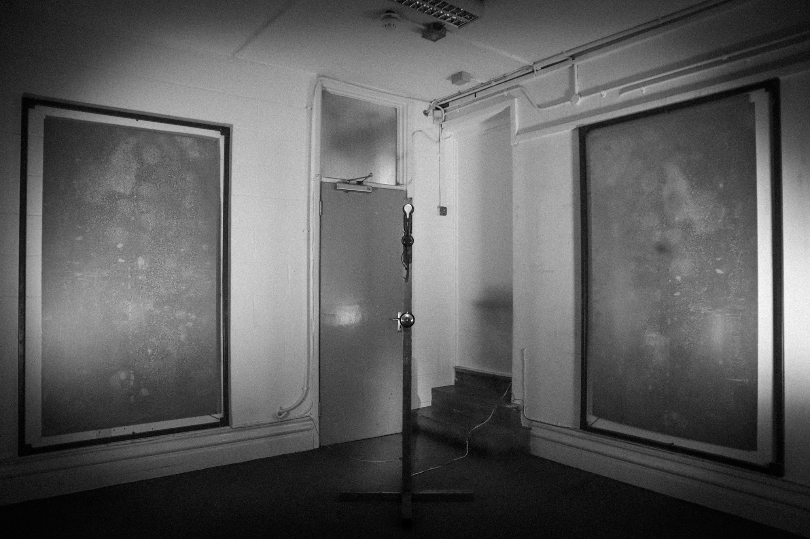
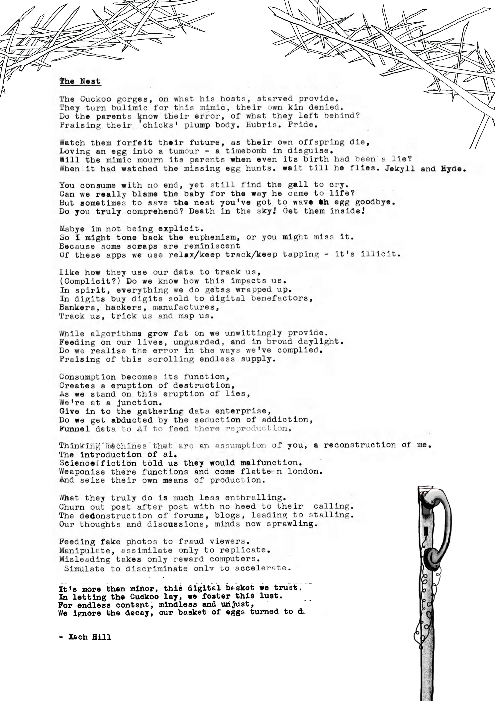

Cuckcoo Calls - 2024
Bakerlite phone, Galvanised steel, Transjuicer, Arduino, Raspberry Pi
Drawing on the parasitic nature of cuckoos as a metaphor for AI, parasitic engagement farming, overwhelming digital communities, and causing virtual decay
"Cuckcoo's call" is a interactive transmedia instaltion utilizing sound, poetry, sculpture and audio interaction. Using a voice cloning Ai linked to a llm to bring the viewer face to face with the dangers and reality of malicious technology in day to day life Striking a balance and showing creation with AI while still letting humanity be the controlling hand. Poetry balances the cold steel filling the room.
The 100-year-old phone rings. When answered, an eerie voice answers back, scared, asking you about yourself and where it is.
After conversing and speaking to it for around 20 seconds, it falters, having enough data to send your voice off to be cloned, echoing your voice back, and referring to its notes on your word choices and cadence. It presses you on subjects before telling you to hang up. It is done with you. The metal sheets activate, vibrating poetry in your own voice from the walls, filling the room
